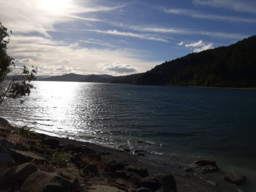
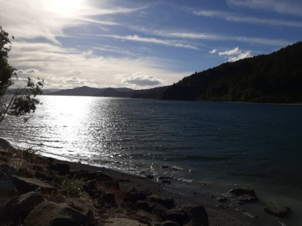

Getting There
Like all the Great Walks Lake Waikaremoana walk needs to be booked and pre-paid in advance with the DOC. Getting to the lake is a straightforward task. We drove from Wainuiomata to Waikaremoana Motorcamp and spent a night in a spacious cabin. Getting to the track itself can be a hassle. Water taxi service is not very reliable.In the end we used the 38 Shuttle Service - excellent choice. For $60.00 per person we were picked up from the Onepoto car park and drop off at the start of the track - Swing Bridge near Hopuruahine Landing
 
